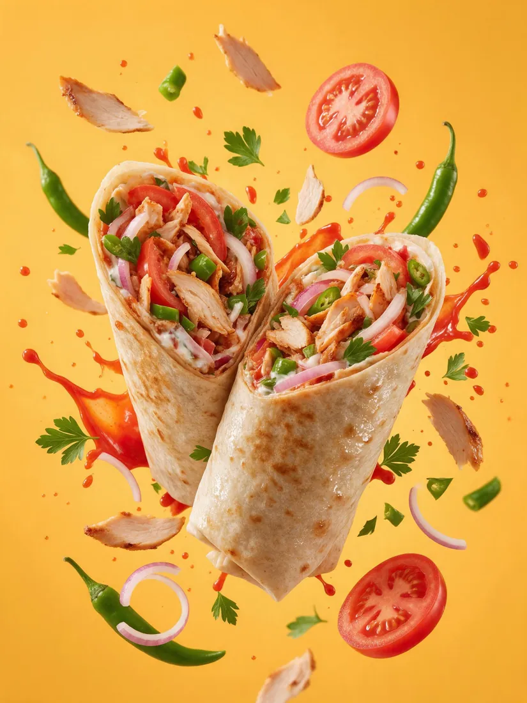
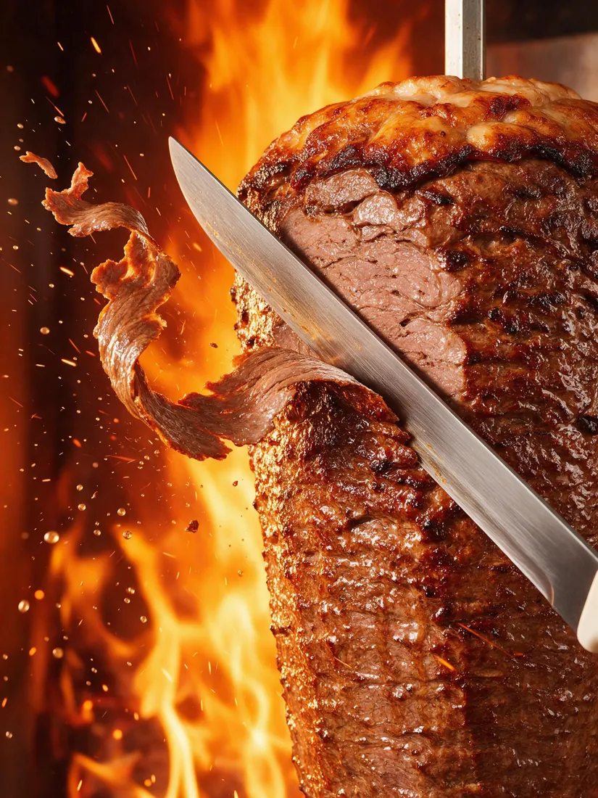
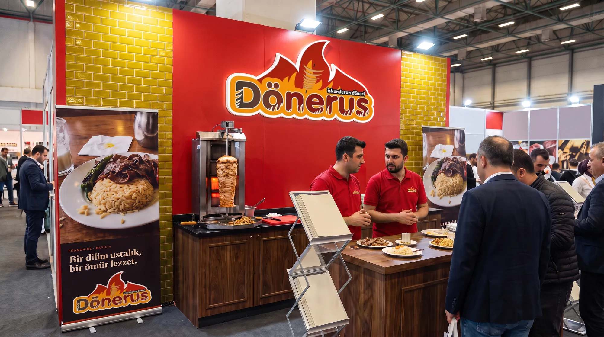
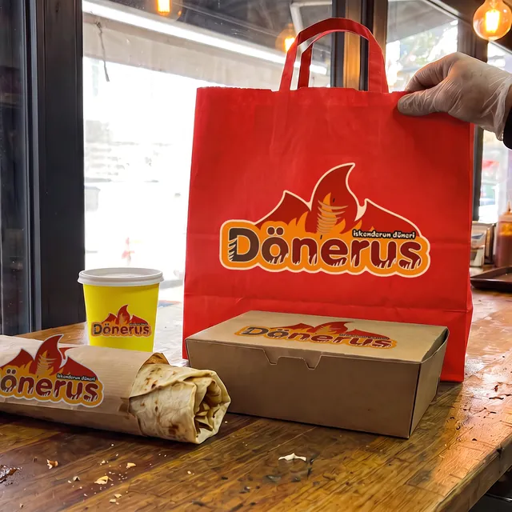
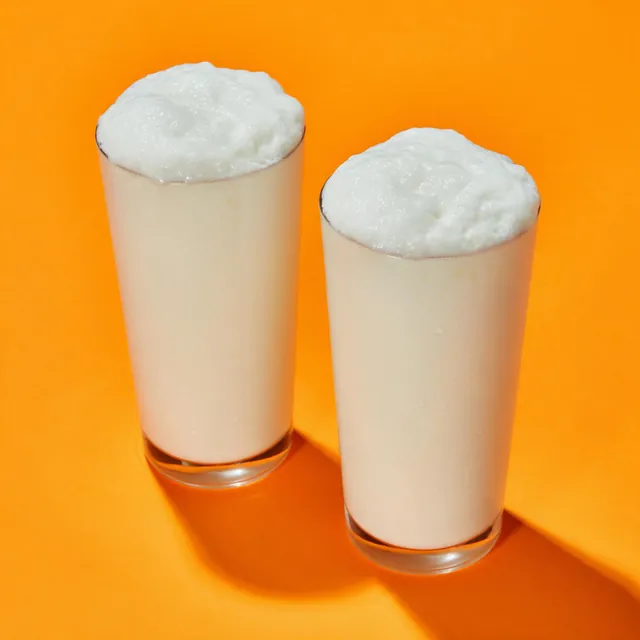
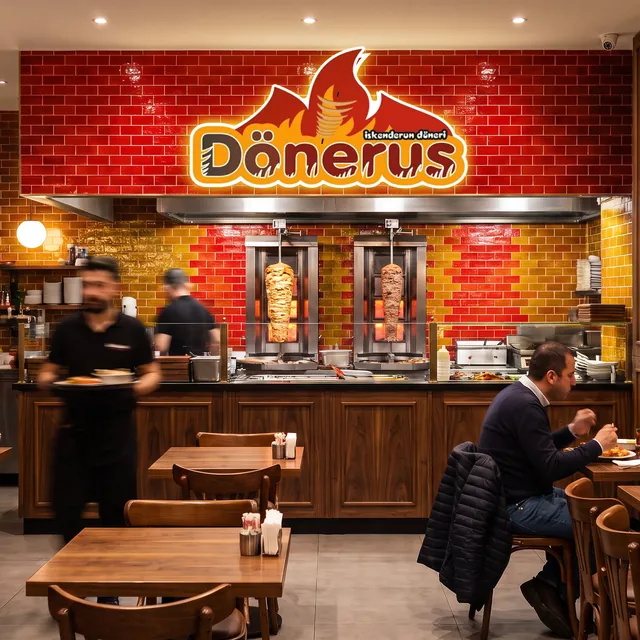
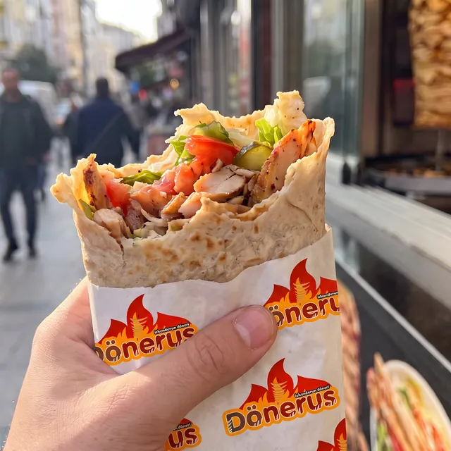
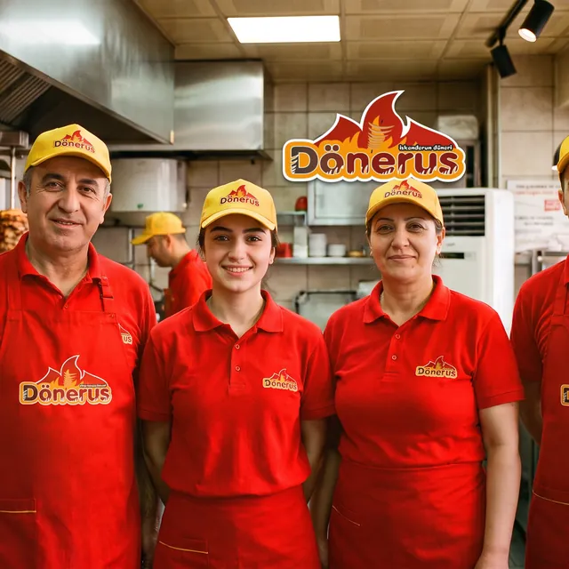

İskenderun usulü 🔥
Sıcak, sulu,
Sıcak, sulu,
bol soslu!
İnce dilim döner, kızgın tereyağı, domates sos ve yoğurt. Bir ısırıkta İskenderun.

Sıcakve taze
ustanın favorisi ↓

Ateştentabağına
İskenderun usulü nedir?
İnce dilim, kızgın tereyağı, bol sos.
Döner kâğıt inceliğinde kesilir; pidenin üstüne serilir, domates sosla buluşur, üzerine kızgın tereyağı gezdirilir, yanına yoğurt konur. Lavaşta, ekmekte ya da porsiyon — hepsinin sırrı aynı: sabırla pişen döner.
Lezzetimizi tanı →🔥Sabırla pişer
Döner acele sevmez; ateşin karşısında yavaş yavaş kızarır.
🥖Her gün taze
Lavaş, pide ve ekmek her gün taze gelir.
🧈Kızgın tereyağı
İskenderun usulünün imzası: masaya cızırdayarak gelir.
🛵Kapında sıcacık
Paket serviste de ilk lokmadaki gibi.

Franchise
Şehrine Dönerus getir!
Hazır sistem, yanında ekip. Eğitimden açılışa, tedarikten pazarlamaya kadar seninleyiz.
@donerus
Sofradan kareler




